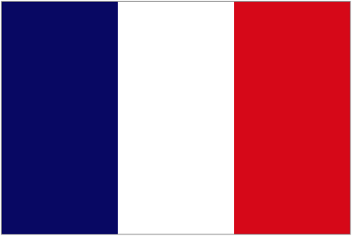
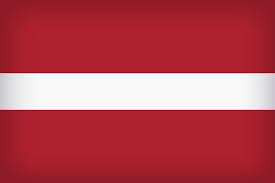

| # | Name | Date of birth | Contract until | ||
|---|---|---|---|---|---|
| Goalkeepers | |||||
| 1 |  Ron-Thorben Hoffmann Ron-Thorben Hoffmann |
27/03/1986 | 2023 | ||
| 23 | Lukas Schneller |
30/09/1996 | 2025 | ||
| 12 | Michael Wagner |
04/04/1999 | 2021 | ||
| Defenders | |||||
| 21 | Lenny Borges |
30/04/2001 | 2021 | ||
| 44 | Dennis Waidner |
08/02/2001 | 2022 | ||
| 3 | Angelo Mayer |
10/09/1996 | 2021 | ||
| 5 | Nicolas Feldahn |
14/08/1986 | 2021 | ||
| 15 | Alexander Lungwitz |
04/08/2000 | 2021 | ||
| 13 | Killian Senkbeil |
05/22/1999 | 2021 | ||
| 40 | Jamie Lawrence |
10/11/2002 | 2022 | ||
| 4 | Remi Vita | 01/04/2001 | 2024 | ||
| 27 | Josip Stanisić |
02/04/2000 | 2021 | ||
| 26 | Bright-Arrey Mbi |
26/03/2003 | 2022 | ||
| Midfielders | |||||
| 19 | Maximilian Welzmuller |
10/01/1990 | 2023 | ||
| 24 | Christopher Scott |
07/06/2002 | 2022 | ||
| 10 | Timo Kern |
16/01/1990 | 2022 | ||
| 38 | Angelo Stiller |
04/04/2001 | 2021 | ||
| 22 | Torben Rhein |
12/01/2003 | 2022 | ||
| 30 | Daniel Ontuzans | 07/03/2000 | 2021 | ||
| 31 |  Sarpreet Singh Sarpreet Singh |
20/02/1999 | 2022 | ||
| 18 | Maximilian Zaiser |
08/03/1999 | 2021 | ||
| Forwards | |||||
| 14 | Lenn Jastremski |
24/01/2001 | 2023 | ||
| 7 |  Dimitri Oberlin Dimitri Oberlin |
27/09/1997 | 2021 | ||
| 11 | Nicolas Kuhn |
01/01/2000 | 2023 | ||
| 17 | Malik Tillman |
28/05/2002 | 2023 | ||
| 9 | Jann Fiete-Arp |
06/01/2001 | 2024 | ||